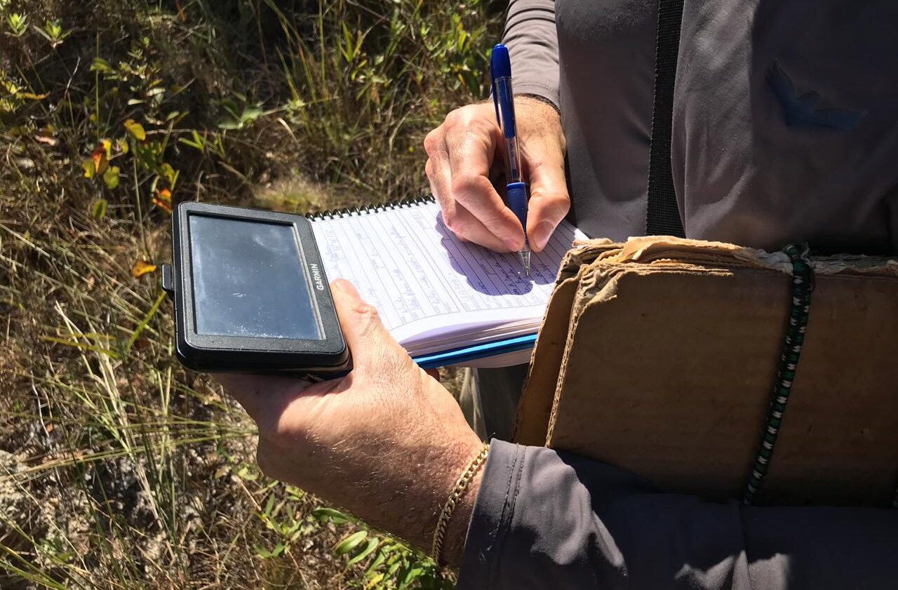

Corforme a evolução do mundo em que vivemos, juntamente dos avanços
tecnológicos, o monitoramento de animais tem se tornado cada vez mais prático e
preciso, sendo uma valiosa ferramenta para a obtenção de dados que informem os
hábitos de movimentação de diversas espécies de animais dispersos na natureza,
contando também com a interferência minima do ser humano para a obtenção de
tais dados.
Desde o início do século passado, pesquisadores e cientistas desenvolvem
estudos em que é monitorado ,de forma ordenada, os padrões de movimentação
individual de diversas espécies de animais. Por um longo período, o monitoramento
da vida silvestre se resumiu a observação e captura, fazendo-se o uso de somente
etiquetas, estas implantadas nos animais observados, para a sua identificação, não
tendo assim nenhuma garantia de recaptura e consequentimente obtenção de
informações.
Contudo no final da década de 50, começou-se o uso de transmissores de rádio,
em seguida na década de 70 foi implementado o sistema de satélites Argos,na
década de 90 foi inventado o sistema que mudaria o rumo do rastreamento, o
Sistema de Posicionamento Global (GPS- Global Positioning System).
Graças a evolução das tecnologias citadas, os equipamentos de rastreamento
modernos são capazes de determinar com precisão a localização de um
determinado animal em tempo real. Podendo constatar-se se há influência externa
por parte do homem, afim de proteger tais animais.
